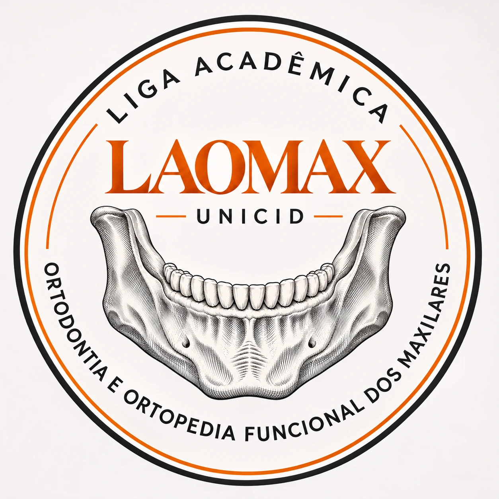

Sobre a LAOMAX
Liga Acadêmica de Ortodontia e Ortopedia Funcional dos Maxilares da UNICID.

Identidade acadêmica
Uma liga de Odontologia da UNICID
A LAOMAX reúne o interesse de estudantes pela Ortodontia e pela Ortopedia Funcional dos Maxilares. A mandíbula em gravura, no centro do selo, identifica o campo de estudo da liga.
No caderno acadêmico, você encontra guias de pesquisa e leitura científica. Na agenda, pode consultar as atividades à medida que forem divulgadas.
Ler o caderno acadêmicoQuer participar da LAOMAX?
Acompanhe a seleção de membros e veja como propor uma atividade.